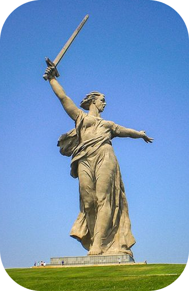
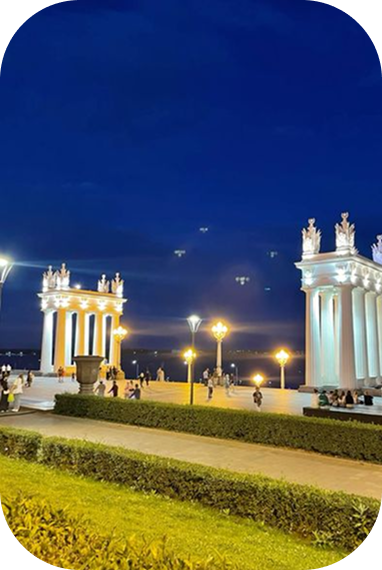

Волгоград: доступный город-герой
Описание
- Тип маршрута: Историко-патриотический
- Протяженность: 10 км (можно разбить на части)
- Время прохождения: 1 день
- Доступность: Для колясочников, слабовидящих
Мамаев курган и скульптура «Родина-мать зовёт!»

Доступность:
- ✅ Пандусы и лифты
- ✅ Тактильные плитки
- ✅ Специальные парковки
Адрес: ул. Маршала Чуйкова, Волгоград
Описание: Мемориальный комплекс посвящён памяти павших в Сталинградской битве.
Музей-панорама «Сталинградская битва»

Доступность:
- ✅ Широкие дверные проёмы
- ✅ Аудиогиды для слабовидящих
- ✅ Туалеты для людей с ОВЗ
Адрес: ул. Чуйкова, 47
Описание: Крупнейшая в России панорама, изображающая битву за Сталинград.
Набережная им. 62-й Армии

Доступность:
- ✅ Ровные поверхности
- ✅ Лавочки для отдыха
- ✅ Парковки для инвалидов
Адрес: Центральная набережная Волгограда
Описание: Одна из самых красивых набережных России.
Отзывы
Иван
Прекрасное место, очень красиво!